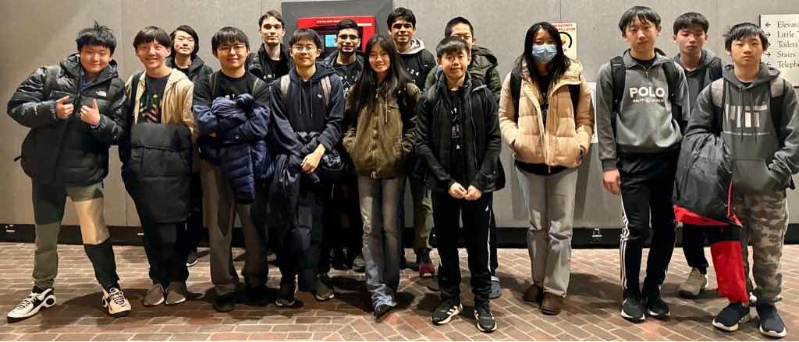

The Texas HMMT February 2024 Team
Texas Momentum A
Arnav Adhikari
Ryan Chin
Alexander Jun
Tina Li (Captain)
Katherine Liu
Channing Yang
Raymond Zhao
Lerchen Zhong
Texas Momentum C (?!)
Aryan Bora (Captain)
Darren Han
Justin Lai
Andrew Li
Alexander Sun
Ryan Tang
Leo Yu
Michael Zhao
Coaches and organizers
Matthew Kroesche
Tina Li
Individual results
Lerchen Zhong placed 4th individually, 25th in Algebra/Number Theory, 13th in Geometry, and 5th in Combinatorics.
Channing Yang placed 17th individually, 25th in Algebra/Number Theory, and 12th in Geometry.
Raymond Zhao placed 10th in Geometry.
Darren Han placed 50th in Algebra/Number Theory and 32nd in Geometry.
Michael Zhao placed 40th in Algebra/Number Theory and 41st in Geometry.
Alexander Sun placed 44th in Algebra/Number Theory.
Team results
Texas Momentum A placed 13th in Sweepstakes, 34th in Team Round, and 11th in Guts Round.
Texas Momentum C placed 17th in Sweepstakes, 17th in Team Round, and 21st in Guts Round.
Team photo

(Back to Main Page)